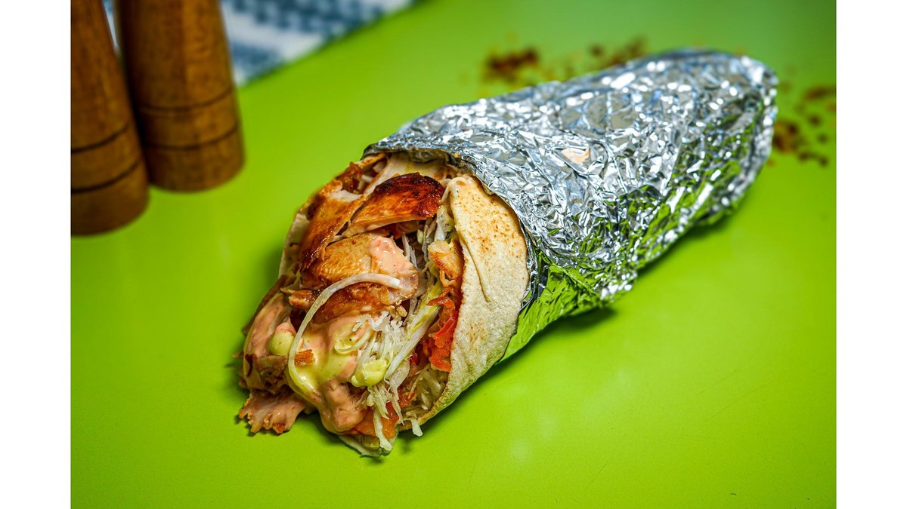

PopularăShaorma · 700 g
Shaorma mare
Carne, cartofi, legume și sosuri, într-o lipie pe măsura poftei.
Ingrediente
Lipie, Cartofi, Carne de pui, Sos picant, Maioneză, Usturoi, Tzatziki, Sos cocktail, Curry, Ketchup, Varză, Castraveți murați, Ardei, Roșii, Ceapă.
36 lei
Comandă